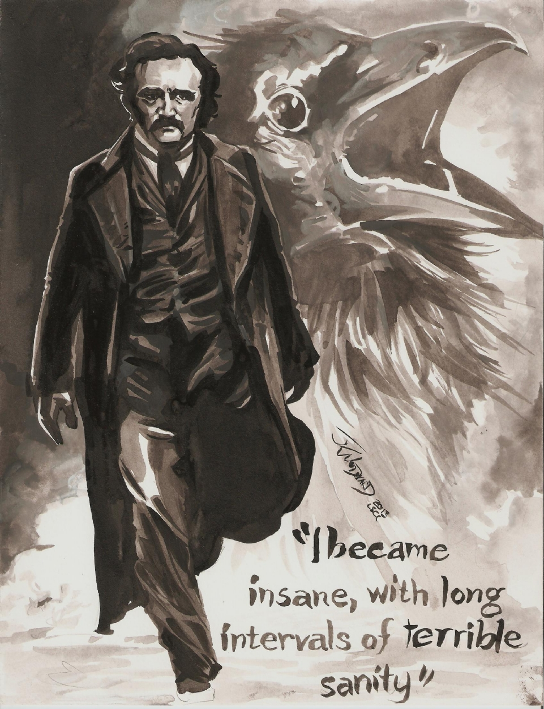
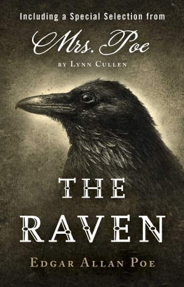
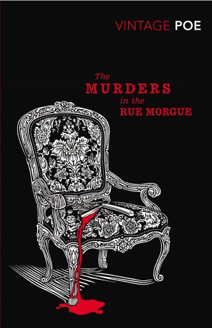
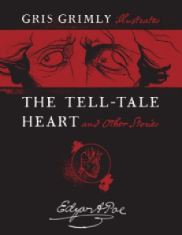
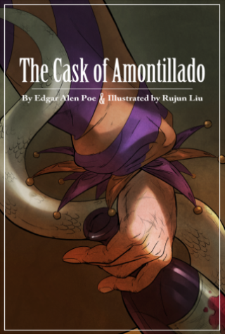
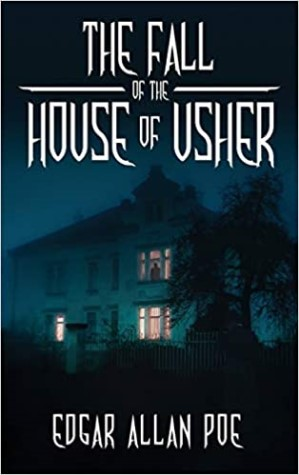
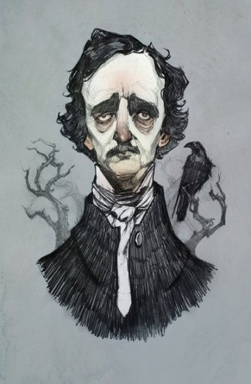
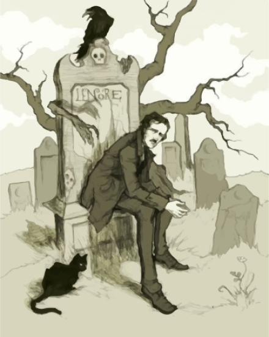
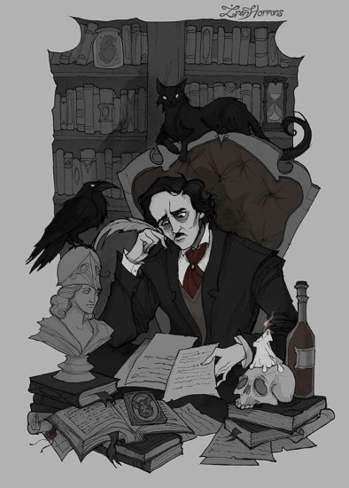

Bibliography

Edgar Allan Poe
1809-1820
Edgar Poe born in Boston to actors David and Eliza Poe, 19 January
1811
Eliza Poe, on theatrical tour, dies in Richmond, 8 December. Edgar is taken in by John and Frances Allan
1815
In England with the Allans,
1815–1820
1817-1825
Attends school in London and suburban Stoke-Newington.
He then continues schooling in Richmond and shows aptitude for Latin, poetry, acting and swimming.
Poe was secretly engaged to Sarah Elmira Royster
1826-1827
Student at the University of Virginia.
Excels in ancient and modern languages and incurs gambling debts.
He leaves for Bostone after quarelling with John Allan.
1828
Enlists in U.S. Army as “Edgar A. Perry”.
Publishes Tamerlane and Other Poems in Boston
1829
Frances Allan dies in February 28 and Poe is transferred to Fortress Monroe, Virginia
183-1831
Poe is promoted to Sergeant Major and discharged from the army in March.
Works on Al Aaraaf, Tamerlane, and Minor Poems
Expelled from West Point in February, 1831
1832
Lives in Baltimore with aunt, Maria Clemm, and her daughter, Virginia
Works on poems: Second Edition contains “To Helen”
1833
“MS. Found in a Bottle” (short story) wins literary prize; is published in Baltimore Saturday Visitor, 19 October
1835
“Hans Pfaal” (first modern science fiction story) published in Richmond’s Southern Literary Messenger, March issue
Moves to Richmond in mid-summer to join Messenger editorial staff.
Courts cousin, Virginia Clemm and brings Virginia and her mother to Richmond.
1836-1839
Marries Virginia Clemm (age 13) in Richmond, 16 May.
Moves to Philadelphia and works on the Narrative of Arthur Gordon Pym (novel), 1838
Becomes assistant editor of Burton’s Gentleman’s Magazine in June, 1839
Works on Conchologist’s First Book (scientific textbook)
1840
Writes tales of the Grotesque and Arabesque (2 vols.) includes “The Fall of the House of Usher”.
He quarrels with editor of Burton’s and leaves in May.
1841
Becomes editor of Graham’s Magazine in February
Completes “Murders in the Rue Morgue” (first modern detective story)
1842
Publishes stories:
“The Pit and the Pendulum”
“The Masque of the Red Death”
“The Mystery of Marie Rogêt”
Interviews Charles Dickens in March
1843
Publishes stories:
“The Tell-Tale Heart”
“The Gold Bug”
“The Black Cat”
Publishes critical essay:
“The Rationale of Verse”
1845
Publishes “The Raven” in the New York Evening Mirror, 29 January
1846
Moves to Fordham, New York and completes:
“The Cask of Amontillado” (story)
“The Philosophy of Composition” (critical essay)
Completes “Ulalume” (poem)
Several Poe stories translated, critically acclaimed in France
1847
Virginia Clemm Poe dies, 30 January and Poe falls ill.
1848-1849
Poe reads “The Poetic Principle” (critical essay) to audience of 1,800 and writes “The Bells” (poem)
1849.
He is engaged to widow Sarah Elmira (Royster) Shelton, former fiancée.
He leaves Richmond for New York, 27 September and is found delirious in Baltimore, 3 October.
Death
Dies, 7 October, 1849
Popular Works:
|  |  |  |  |  |
Fan Works:
|  |  |  |
Legacy:
Edgar Allan Poe is credited as the 'architect of the modern short story'. As the inventor of detective story and the horror genre, he paved a path for modern works and inspires many artistic forms until now.